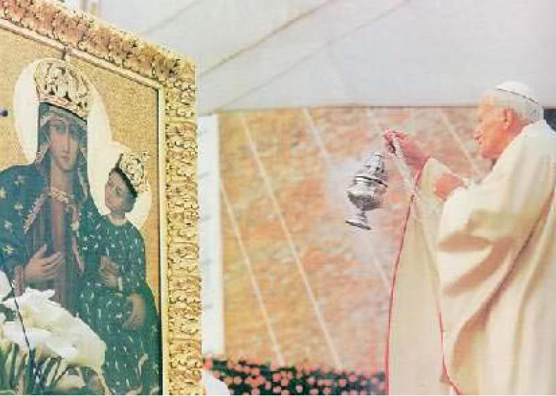

.
Rozdział 17
Część 2 Rozdziału 17.
„A na czole jej wypisane było imię o tajemniczym znaczeniu: Wielki Babilon, matka wszetecznic i obrzydliwości ziemi.” (17:5).
Jest matką wszetecznic, gdyż wiele nurtów religijnych powstało na bazie wiary rzymskokatolickiej.
Można przyjąć, że płodzenie córek rozpoczęło się w dobie Reformacji XVI wieku (pomijając wielką schizmę z XI wieku), dla przykładu wyglądało to tak: z kościoła katolickiego powstał kościół reformacyjny, z reformacyjnego kościół metodystów i baptystów, z nich wyrósł kościół adwentystów, a z kościoła adwentystów kolejne odłamy…
Jest to przykład tylko jednej z genealogii religijnej, których jest znacznie więcej.
Ostatnimi czasy widać jak córy powracają do swojej matki w ruchu EKUMENIZMU, gdzie pierwszym i podstawowym warunkiem przyjęcia jest uznanie boga w trzech osobach. Dlatego do tych cór, śmiało można odnieść słowa: „Nie będę także miłował jej dzieci, gdyż są dziećmi nierządu, (7) bo ich matka uprawiała nierząd, a ich rodzicielka postępowała bezwstydnie.” (Ozeasza 2:6-7).
Apostoł Paweł pisał w I wieku, że ta moc - „tajemnica bezbożności” już się formowała i zaczynała działać (2 Tesaloniczan 2:7).
Ten, co powstrzymywał, czyli pogański Rzym ustąpił pola pseudo chrześcijańskiemu - kościołowi rzymskokatolickiemu, czyli odradzającemu się systemowi babilońskiemu, który identycznie, jak to miało miejsce w starożytnym Babilonie, między innymi:
- chrzci nieświadome dzieci, kropiąc je wodą i czyniąc znak pogańskiej trójcy,
- czci babilońską boginię z dzieckiem na rękach,
- nadaje drugie imię, czyniąc znak na głowie,
- obnosi przedmiot z nadrukiem IHS i używa bezkrwawej ofiary (w Babilonie na ołtarzu Baala, ofiarowano placki dla królowej niebios) z tymże napisem IHS:
Isis - bogini ze słońcem nad głową, Horus w jej rękach oraz Set - czyli babilońska i egipska trójca.
W religii Babilończyków także w najwyższym stopniu czczono boginię Matkę i Syna, przedstawianego na obrazach i rzeźbach, jako dziecko w ramionach matki. Nie trudno zauważyć, że z Babilonu kult Matki i Dziecka rozszedł się po krańce ziemi.
W Egipcie Matka i Dziecko byli czczeni pod imionami Isis i Osiris.
W Indiach, jako Isi i Iswara.
W Azji, jako Cybele i Deoius.
W Pogańskim Rzymie, jako Fortuna i Jupiter-chłopiec.
W Grecji, jako Ceres, Wielka Matka, z niemowlęciem przy piersi lub jako Irene, bogini pokoju z chłopcem, Plutus w jej ramionach.
Shing Moo, święta Matka w Chinach, przedstawiana była z dzieckiem w ramionach i chwałą otaczającą ją, dokładnie tak, jak w dziełach artystów rzymskokatolickich.
Nawet w Tybecie, w Chinach i Japonii, Jezuiccy misjonarze byli zaskoczeni, znajdując odpowiednik ich Madonny z jej dzieckiem, pobożnie czczony jak w samym papieskim Rzymie.
Czy coś nam te pogańskie „królowe” przypominają?

Jeżeli ktoś chciałby zobaczyć, jaki ogrom podobieństw zachodzi miedzy kultem starożytnego Babilonu i nowożytnego Babilonu rzymskokatolickiego, to zachęcam do lektury książki „Dwa Babilony”.
Jako ciekawostkę podam, że już w IX wieku niektórzy ludzie rozumieli i utożsamiali papiestwo właśnie z Babilonem, wymienianym w kontekście Apokalipsy, oczywiście, to nie dowodzi, że byli to ludzie prawi, jednakże uważam, że warto wspomnieć o tym, że była taka świadomość.
Jednym z pierwszych, o których wiadomo, że nazywał papiestwo Babilonem, był Arnulf, arcybiskup Orleanu, a następnie:
Piotr Waldo (XII wiek),
Eberhard II (XIII wiek), arcybiskup Salzburga.
Jan Wiklif (1330–1384),
Jan Hus (1372–1415),
Marcin Luter (1483–1546),
Ulrich Zwingli (1484–1531),
Jan Kalwin (1509–1564),
Jan Wesley (1703–1791),
Karol Spurgen (1834–1892).
„I widziałem tę kobietę pijaną krwią świętych i krwią męczenników Jezusowych. A ujrzawszy ją, zdumiałem się bardzo.” (17:6).
Jaka instytucja ma na sumieniu miliony ludzi i świadków Jehoszua?
Jaka organizacja stworzyła jeden z najbardziej okrutnych w historii aparatów represji, który zasłynął niechlubnie torturowaniem i paleniem ludzi na stosach?
Odpowiedź na te pytania jest jednoznaczna, w poprzednich rozdziałach (13) o tym pisałem, wraz z przykładami (liczbami ofiar), ale dla porządku przytoczmy jeszcze kilka faktów:
„W Prowansji, we Francji, pod koniec trzynastego wieku średniowieczny kościół katolicki rozpętał kampanię przeciw Albigensom. W ciągu dwudziestu czterech godzin ścięto głowy ponad pięćdziesięciu tysiącom chrześcijan Albigensów, ponieważ nie chcieli wyrzec się swojej wiary. Historia tego tragicznego okresu ujawnia, że ponad milion chrześcijan było bestialsko torturowanych i zabitych w samej południowej Francji” (Jones - Historia kościoła chrześcijańskiego - 1826).
„W samej Hiszpanii liczba skazanych przez Inkwizycję przekroczyła trzy miliony, z czego 30 tysięcy zostało spalonych na stosach”. (R. W. Thompson, The Papacy and Civil Power (New York, 1876).
W latach 1540 - 1570 w wojnie papieskiej przeciwko waldensom zginęło nie mniej niż 90 tysięcy protestantów. Duchowni katoliccy z wielkim okrucieństwem i brutalnością torturowali i palili żywcem niewinnych mężczyzn i kobiety. W dodatku głosili, że czynią to w imię Chrystusa pod bezpośrednimi rozkazami „jego namiestnika” - papieża.
„W nocy 24 sierpnia 1572 ( tzw. noc św. Bartłomieja) we Francji zamordowano 20 tysięcy hugenotów . Dalszych 20 tysięcy zginęło jako męczennicy.” (Henry Halley, Pocket Bible Handbook, Chicago, IL, 1944).
„Papież Innocenty III jednego popołudnia zamordował o wiele więcej chrześcijan niż jakikolwiek cesarz w czasie całego swojego życia”. (Katolicki historyk, Peter de Rosa, Vicars of Christ; The Dark Side of the Papacy(Crown Publishers, 1988), str. 35).
Świecki historyk Will Durant pisał:
„Inkwizycję stawiamy na równi z wojnami i prześladowaniami naszych czasów jako najciemniejsze strony dziejów ludzkości, ujawniające okrucieństwo nieznane najgorszym bestiom”. (Will Durant, The Story of Civilization, tom IV, str. 784).
Kościół przez bardzo długi okres prześladował i skazywał na stos chrześcijan, nawet za posiadanie, czytanie nie mówiąc już o rozprowadzaniu czy przepisywaniu fragmentów Pisma Świętego.
Jednym z najcięższych przewinień tej jedynej w swoim rodzaju instytucji religijno-politycznej jest jej zbrodnicza przeszłość. Ta apokaliptyczna „wielka nierządnica” - kościół rzymskokatolicki winny jest „krwi proroków i świętych, i wszystkich, którzy zostali pomordowani na ziemi” (Objawienie 18:24).
Choć w języku polskim trudno natrafić na dokumenty lub opracowania na ten temat – papiestwo winne jest najstraszliwszych zbrodni, jakich kiedykolwiek dopuszczono się na ziemi.
Swoje krwawe żniwo kościół rzymski rozpoczął, bowiem krótko po uzyskaniu statusu religii państwowej, już za panowania cesarza Konstantyna, a zakończył dopiero w XX wieku.
Papiestwo ma na swoim koncie niezliczoną ilość ofiar.
Wystarczy wspomnieć o krucjatach, wojnach, inkwizycji, polowaniu na „czarownice”, szerzeniu antysemityzmu, rasizmu, o popieraniu największych dyktatorów – takich jak chociażby Benito Mussolini, gen. Franco, Adolf Hitler i Pinochet – aby stwierdzić, że papiestwo jest winne bezpośrednio lub pośrednio śmierci setek milionów ludzi.
Za wyraźną aprobatą kościoła miał miejsce holocaust Indian w czasie wypraw hiszpańskich i portugalskich konkwistadorów.
W ciągu stu lat populacja Meksyku zmniejszyła się z około 25 do 1 miliona, a w obu Amerykach po latach pięćdziesięciu z 80 milionów pozostało 10 milionów!
Papiestwo jest odpowiedzialne nie tylko za krucjaty przeciwko „niewiernym”, „odszczepieńcom”, „czarownicom”, za okrucieństwa inkwizycji, lecz także niesie współodpowiedzialność za śmierć 6 milionów Żydów oraz dziesiątki milionów ofiar największych wojen XX stulecia, które były prowadzone z oficjalnym bądź nieoficjalnym błogosławieństwem kościoła.
Niesposób wymienić choćby ułamka zbrodni katolicyzmu…
Guenter Lewy pisze tak:
„Kiedy w hitlerowskich obozach koncentracyjnych umierało w męczarniach tysiące Niemców przeciwstawiających się nazizmowi, kiedy wyniszczano polską inteligencję, kiedy ginęły setki tysięcy Rosjan, traktowanych jako słowiańscy Untermenschen [podludzie] i kiedy 6 milionów ludzi mordowano za «niearyjskie» pochodzenie, hierarchia Kościoła katolickiego w Niemczech popierała reżim dopuszczający się tych zbrodni. Papież rzymski, duchowy zwierzchnik i najwyższy autorytet moralny Kościoła rzymskokatolickiego, milczał”
(„Kościół katolicki a Trzecia Rzesza”, s. 370).
„Siedem głów, to siedem pagórków, na których rozsiadła się kobieta” (17:9).
Miastem zbudowanym i jedynym znanym z położenia na siedmiu wzgórzach, które rządzi „królami świata” od czasów, kiedy Jan spisywał Apokalipsę w pierwszym wieku, poprzez kolejne wieki - jest RZYM! Co do tego nie ma żadnych wątpliwości!
O Rzymie wszędzie czytamy:
Roma – „Limen Apostolorum, la citta dei sette colli”.
Rzym – „Twierdza Apostolska, miasto siedmiu wzgórz”.
W Encyklopedii katolickiej czytamy:
„W mieście Rzym położonym na siedmiu pagórkach mają swoją siedzibę władze państwa watykańskiego”. (Catholic Encyklopedia, Moody Press, maj 1994, str. 62).
Historyk Warron już w I wieku przed naszą erą określa Rzym mianem „Septimontium” i podaje nazwy owych wzgórz. Licząc od Tybru i idąc zgodnie z ruchem wskazówek zegara mamy:
- Kapitol,
- Kwirynał,
- Wiminal,
- Eskwilin,
- Celius,
- Palatyn,
- Awentyn.

Za czasów Jana także nie było wątpliwości, które miasto leży na siedmiu wzgórzach, na przykład na rzymskiej monecie z 70 roku z okresu cesarstwa Wespazjana,widnieje kobieta siedząca na siedmiu pagórkach Rzymu…
Możemy z niesamowitą dokładnością zidentyfikować „nierządnicę” z 17 rozdziału.
„A kobieta, którą widziałeś, to wielkie miasto, które panuje nad królami ziemi.” (17:18).
„Kościół Rzymsko Katolicki zastąpił Imperium Rzymskie, i jest jego właściwą kontynuacją. Papież, który nazywa siebie samego Królem oraz Pontefix Maximus - jest właściwym następcą Cezara” (Adolph Harnack, Czym jest Chrześcijaństwo?, strona 270).
Siedziba i nazwa kościoła rzymskiego związana jest nierozerwalnie z Rzymem i podobnie jak Rzym cezarów władał podbitymi królami ziemi, tak i Rzym papieski.
O roszczeniach zaś do władzy absolutnej jednoznacznie może świadczyć Dictatus Papae z 1075 roku, w którym czytamy:
„Jedynie papież może używać insygniów cesarskich (teza 8). Tylko jemu przysługuje prawo do ucałowania nóg przez władców (9). Tylko papież ma władzę deponowania cesarzy (12). Papieża nikt nie ma prawa sądzić (19). Zgodnie z Pismem św. Kościół rzymski nigdy nie błądził i nigdy nie pobłądzi (22). Papież, kanonicznie wybrany, niewątpliwie staje się świętym (23)”.
W podobnym tonie utrzymane są roszczenia zawarte w bulli Unam Sanctam (1302 rok), w której papież Bonifacy VIII pisał:
„Albowiem dwa są we władzy Kościoła miecze, a mianowicie duchowy i doczesny (...). Oba są we władaniu Kościoła, i ten duchowy i ten materialny. Drugim należy się posługiwać dla dobra Kościoła, pierwszym zaś sam Kościół się posługuje. Ten, bowiem jest w rękach Kościoła, tamten zaś w ręku królów i rycerzy, ale w uległości Kościołowi i na jego polecenie (...). Oświadczamy, głosimy i stwierdzamy, że wszyscy ludzie muszą się podporządkować papieżowi rzymskiemu, jeśli chcą osiągnąć wieczne zbawienie”.
„Jeśli zaś powodzenie Włoch i całego świata tkwi w tej sile najlepszej dla dobra i pożytku wspólnego, jaką zapewnia autorytet Stolicy Apostolskiej oraz w tym najściślejszym związku, jaki łączy wszystkich wiernych chrześcijan z Najwyższym Pasterzem Rzymskim, to uważamy, że nie może być dla Nas niczego ważniejszego niż zachowanie bez uszczerbku godności Rzymskiej Katedry i coraz silniejsze utwierdzanie łączności członków z Głową, synów z Ojcem.” (Encyklika Leona XIII Inscrutabili Dei consilio 1878 - O postawach zła w społeczeństwie, misji kościoła i papiestwa).
„Wokół okrągłego stołu polityki międzynarodowej żaden władca nie mógłby dowodzić, żaden rząd nie mógłby funkcjonować bez aprobaty rzymskiego papieża.” (Malachi Martin, The Keys of This Blond).
Historyk Walter James, napisał, że papież Innocenty III „całą Europę trzymał w swojej sieci” (Walter James, The Christian in Politics, Oxford University Press, 1962), a papież Grzegorz IX otwarcie twierdził, że „papież jest panem i władcą wszystkiego i wszystkich”.
Ks. dr Antoni Naumczyk, pisze:
„Świat starożytny, średniowiecze i czasy najnowsze znały potęgi obejmujące rozległe kraje, władające kilkoma lub kilkunastoma narodami – nie znały jednak potęgi światowej o takim zakresie władzy, tak zaborczej, tak bezwzględnej i tak trwałej równocześnie jak papiestwo. Papiestwo jest w całym tego słowa znaczeniu potęgą, i to potęgą światową. Obejmuje dziś wszystkie kontynenty i wszystkie rasy, w jednych krajach jest u szczytu swej władzy, w innych o nią walczy. Papiestwo jako zorganizowany system trwa już 1500 lat”. (Antoni Naumczyk Biblijne podstawy rzymskiego papiestwa, Warszawa 1961).
Któremu przywódcy religijnemu bili pokłony i który był całowany w rękę przez niemal wszystkich władców świata!?
Nawet Yasser Arafat całuje pierścień JP II, czyżby był katolikiem!? Nie. Po prostu Pismo mówi prawdę, że Watykan „panuje nad królami ziemi”…
„Jakąż nierządnicą stało się to miasto wierne, niegdyś pełne praworządności, sprawiedliwość w nim mieszkała, a teraz mordercy! (22) Twoje srebro obróciło się w żużel, twoje wino zmieszane z wodą. (23) Twoi przewodnicy są buntownikami i wspólnikami złodziei, wszyscy lubią łapówki i gonią za darami, nie wymierzają sprawiedliwości sierocie, a sprawa wdów nie dochodzi przed nich. (24) Dlatego tak mówi Pan Zastępów, Mocarz Izraela: Biada! Ulżę sobie na moich nieprzyjaciołach i pomszczę się na moich wrogach! (25) I zwrócę swoją rękę przeciwko tobie” (Izajasza 1:21-25).
Nie było i nie ma innego miasta na ziemi z wyjątkiem „chrześcijańskiego” Rzymu, które by tak perfekcyjnie pasowało do opisu z 17 rozdziału księgi Objawienia.
Jest ono winne zwodzenia dusz i prowadzenia tłumów do obrzydliwości i nieczystości, do bałwochwalczego wielbienia trzech bogów, niemoralności duchowej i seksualnej, do zapierania się wystarczalności odkupienia Chrystusa, a także sprzedaży fałszywego zbawienia (odpustów), przedstawiając się, jako jedyny prawdziwy kościół działający w imieniu Chrystusa, który za pomocą aparatu świeckiego „ogniem i mieczem” nawracał na jedyną słuszną religię…
„I zaniósł mnie w duchu na pustynię. I widziałem kobietę siedzącą na czerwonym jak szkarłat zwierzęciu, pełnym bluźnierczych imion, mającym siedem głów i dziesięć rogów. (8) Zwierzę, które widziałeś, było i już go nie ma, i znowu wyjdzie z otchłani, i pójdzie na zatracenie. I zdumieją się mieszkańcy ziemi, których imiona nie są zapisane w księdze żywota od założenia świata, gdy ujrzą, że zwierzę to było i że go nie ma, i że znowu będzie. (12) A dziesięć rogów, które widziałeś, to dziesięciu królów, którzy jeszcze nie objęli królestwa, lecz obejmą władzę, jako królowie na jedną godzinę wraz ze zwierzęciem. (13) Ci są jednej myśli, i oddadzą moc i władzę swoją zwierzęciu. (14) Będą oni walczyć z Barankiem, lecz Baranek zwycięży ich, bo jest Panem panów i Królem królów, a z nim ci, którzy są powołani i wybrani, oraz wierni.” (17:3, 8, 12-14).
Znaczenie i symbolika bestii oraz rogów została omówiona w 13 rozdziale.
Jak wiemy w biblijnych przepowiedniach proroczych, bestie - zwierzęta symbolizują mocarstwa światowe (Daniela 7:3, 17, 23), a według wizji objawionych Danielowi, ostatnim mocarstwem władającym na ziemi miał być Rzym i tak też było i jest - bez względu na to, jakie formy przybierał w przeszłości i przybiera w teraźniejszości.
Siedmiogłowa bestia przybiera kolor szkarłatny, gdy władze dopuszczają się „nierządu” z klerem, wówczas jest „Bestią Szkarłatną” (Objawienie 17:3), czy bluźniącą „Bestią z Morza” (Objawienie 13:1).
Natomiast, gdy przybiera charakter antyklerykalny, zwana jest w Apokalipsie „Bestią z Czeluści” (Objawienie 11:7, 17:16).
Bestia ma siedem głów, które przede wszystkim są aluzją i wskazaniem tego, że jest ona sterowana z „siedmiu wzgórz” miasta Rzymu (Objawienie 17:9).
Jednakże głowy symbolizują również poszczególne systemy władzy używane przez szatana do realizacji jego planów na ziemi „Siedem głów… i siedmiu jest królów” (17:9).
Rogi symbolizują państwa, królów, podział królestw, siłę i władzę (Daniela 8:20, Jeremiasza 48:25, Daniela 7:24, 8:21-22, Objawienie 17:12).
Możemy wyróżnić trzy zasadnicze etapy dotyczące głów oraz rogów zwierzęcia:
1. W 12 rozdziale diademy znajdują się na głowach „Bestii” (12:3), gdyż władzę sprawowała jedna z siedmiu głów - pogański smok reprezentujący Imperium Rzymskie.
2. W 13 rozdziale diademy znajdują się na dziesięciu rogach „Bestii” (13:1), gdyż był to czas panowania rogów wyrosłych na głowie Imperium Rzymskiego, a więc podzielonych państw Europy na czele z „Małym Rogiem”, we współpracy z którym stworzyli odrodzone „smocze” Imperium Romanum, gdyż pogańskie Imperium Rzymu, jako bestia, otrzymało śmiertelny cios w roku 476, kiedy upadła Jego Zachodnia część.
Polityczny Rzym przeminął, lecz niebawem pojawił się ponownie, jako Święte Imperium rzymskokatolickie, w którym papiestwo mianowało króli i imperatorów w Europie, dzięki czemu niebawem stworzyło ŚWIĘTE CESARSTWO RZYMSKIE (obraz bestii 800/962 rok), jak napisano: „I zdumieją się mieszkańcy ziemi, których imiona nie są zapisane w księdze żywota od założenia świata, gdy ujrzą, że zwierzę to było i że go nie ma, i że znowu będzie”.
Na przestrzeni wieków wspólnie dręczyli i prześladowali Słowo Boże i dzieci Boże, jak napisano: „Ci są jednej myśli, i oddadzą moc i władzę swoją zwierzęciu. (14) Będą oni walczyć z Barankiem”.
3. W 17 rozdziale „Bestia” nie ma diademów (17:3), gdyż po roku 1798 na skutek osłabienia papiestwa, nastąpiło oddzielenie kościoła od państwa.
„A dziesięć rogów, które widziałeś, i zwierzę, ci znienawidzą wszetecznicę i spustoszą ją, i ogołocą, i ciało jej jeść będą, i spalą ją w ogniu. (17) Bóg, bowiem natchnął serca ich, by wykonali jego postanowienie i by działali jednomyślnie, i oddali swoją władzę królewską zwierzęciu, aż wypełnią się wyroki Boże”. (17:16-17).
W 1798 roku, po trwającej 1260 lat teokracji, Rewolucja Francuska dała początek rządom cechującym się rozdziałem religii od państwa. Od tamtego czasu cały czas trwa proces pustoszenia „wszetecznicy”, przy czym sześć czasz gniewu Bożego już zostało wylanych…
Siedmiu królów.
„Siedmiu jest królów; (10) pięciu upadło, jeden jest, inny jeszcze nie przyszedł, a gdy przyjdzie, będzie mógł krótko tylko pozostać. (11) A zwierzę, które było, a już go nie ma, jest ósmym, i jest z owych siedmiu, idzie na zatracenie". (17:9-11).
„Siedem głów” to przede wszystkim aluzja do „wielkiego miasta” RZYMU, z którego, jako centrum sterowany był „smok”, a później „zwierze z morza”, jednakże, jak już wspomniałem głowy symbolizują również poszczególne systemy władzy używane przez szatana do realizacji jego celów na ziemi „Siedem głów… i siedmiu jest królów” (17:9).
W proroctwach biblijnych „głowy” reprezentują całe mocarstwa (Daniela 2:32, 37-38), dlatego anioł objaśniający znaczenie wizji, zinterpretował „siedem głów” nie tylko, jako „wielkie miasto”, ale również jako „siedem gór” (17:9), gdyż „góry” również reprezentują mocarstwa (nie zaś pojedynczych władców).
„Oto Ja wystąpię przeciwko tobie, góro zniszczenia (Babilonie) - mówi Pan - która zniszczyłaś całą ziemię; i wyciągnę moją rękę przeciwko tobie, i strącę cię ze skał, i zamienię cię w górę płonącą.” (Jeremiasza 51:25, porównaj Psalm 80:9-11, Daniela 2:34, 44).
Dlatego „głów bestii” nie można odnosić do rzymskich cesarzy czy innych władców, jak próbują to robić niektórzy. Mamy natomiast pod postacią „głów” bestii aluzję do poszczególnych mocarstw światowych, systemów władzy, potęg, które dręczyły lud Boży, których apoteozą było Imperium Rzymskie we wszystkich swoich przejawach.
Zatem siedmiu królów, o których tu mowa, to kolejne mocarstwa światowe, które miały największy wpływ na lud Boży, począwszy od Izraela cielesnego, kończąc na Izraelu duchowym. Były to:
1. Egipt (2133 - 1070 rok przed Chrystusem).
2. Asyria (912 - 609 rok przed Chrystusem).
3. Babilon (609 - 539 rok przed Chrystusem).
4. Medo-Persja (539 - 331 rok przed Chrystusem).
5. Grecja (331 - 146 rok przed Chrystusem).
6. Rzym pogański od 146 - 476 roku po Chrystusie, a następnie papieski (Imperium rzymskokatolickie do 1793/1798 roku).
7. Faszystowska III Rzesza.
8. Unia Europejska (trwa i rośnie...).
Słowo Boże potwierdza zarówno te potęgi, jak i tą kolejność.
Niesamowite jest to, że również historycy zgodnie z Pismem Świętym wskazują na powstające po sobie potęgi światowe właśnie w takiej kolejności (pomijając dwie ostatnie).
Jako pierwsze mocarstwo gnębiące lud Boży, Pismo wskazuje Egipt, a następnie Asyrię:
„Bo tak mówi Wszechmogący Pan: Mój lud zstąpił niegdyś do Egiptu, aby tam przebywać jako obcy przybysz. Potem Asyryjczycy gnębili go bez powodu.” (Izajasza 52:4, porównaj Jeremiasza 2:20-37).
Po tych mocarstwach miały powstać cztery kolejne:
„Ja, Daniel, miałem w nocy widzenie: Oto cztery wiatry niebieskie wzburzyły Wielkie Morze, (3) i cztery wielkie zwierzęta wychodziły z morza, każde inne. (17) Owe wielkie cztery zwierzęta, to czterej królowie, którzy powstaną na ziemi.” (Daniela 7:2-3, 17).
Jacy to czterej kolejni królowie (mocarstwa) mieli powstać?
Po Asyrii panowanie przypadło Babilonii:
„Taki jest sen, a teraz go wyłożymy królowi: (37) Ty, o królu, jesteś królem królów, któremu Bóg niebios dał królestwo, moc i siłę, i chwałę” (Daniela 2:36-38).
Następnie, po Babilonie powstanie inne królestwo, słabsze niż twoje”. (Daniela 2:39). To kolejne „słabsze” królestwo to Medo-Persja:
„twoje królestwo będzie podzielone i oddane Medom i Persom.” (Daniela 5:28).
Po Medach i Persja nastało „trzecie królestwo z miedzi, które opanuje całą ziemię. (Daniela 2:39).
Była to Grecja:
„I widziałem, jak natarł na barana, a rozjuszywszy się nań, uderzył na barana, złamał oba jego rogi; a baran nie miał siły, by mu sprostać; i rzuciwszy go o ziemię, zdeptał go, a nie było nikogo, kto by wyrwał barana z mocy kozła. (20) Baran z dwoma rogami, którego widziałeś, oznacza królów Medii i Persji. (21) A kozioł, to król grecki” (Daniela 8:7, 20-21).
Po Grecji nastały rządy Rzymu.
„Czwarte królestwo będzie mocne jak żelazo, bo żelazo wszystko kruszy i łamie; i jak żelazo, które kruszy, tak i ono wszystko skruszy i zdruzgocze.” (Daniela 2:40).
„Czwarte zwierzę oznacza czwarte królestwo na ziemi, które jest inne niż wszystkie królestwa; ono pochłonie całą ziemię, podepcze i zmiażdży ją. (24) A dziesięć rogów znaczy, że z tego królestwa powstanie dziesięciu królów, a po nich powstanie inny; ten będzie inny niż poprzedni i obali trzech królów. (25) I będzie mówił zuchwałe słowa przeciwko Najwyższemu, będzie męczył Świętych Najwyższego, będzie zamyślał odmienić czasy i zakon; i będą wydani w jego moc aż do czasu i dwóch czasów i pół czasu. (26) Potem odbędzie się sąd i pozbawią go władzy, aby ją ostatecznie zniszczyć i obalić.” (Daniela 7:23-26).
Jak widać, „czwarte królestwo” z wizji Daniela miało się ostać do końca, choć podzielone między sobą czasami bardziej, czasami mniej, to jednak w różnych formach trwa do dziś, jak też napisano:
„A że widziałeś nogi i palce po części z gliny, a po części z żelaza, znaczy, że królestwo będzie rozdzielone, lecz będzie miało coś z trwałości żelaza, jak widziałeś żelazo zmieszane z ziemią gliniastą. (42) A to, że palce u nóg były po części z żelaza, a po części z gliny, znaczy, że królestwo będzie po części mocne, a po części kruche. (43) A że widziałeś żelazo zmieszane z gliniastą ziemią, znaczy: zmieszają się z sobą, lecz jeden nie będzie się trzymał drugiego, tak jak żelazo nie może się zmieszać z gliną.” (Daniela 2:36-43).
Palce posągu to narody Europy.
Czyli mamy najpierw Egipt i Asyrię.
Następnie prorok Daniel mówi o królestwie Babilonu, które za jego czasów było potęgą i jednocześnie prześladowcą ludu Bożego.
Następnie mówi o słabszym królestwie, mającym powstać, czyli o Medo-Persji.
Kolejnym królestwem był Grecja.
Czwartym królestwem z wizji Daniela oraz szóstym (szósta głowa-król) z wizji Jana, które istniało podczas spisywania księgi Objawienia był pogański Rzym, zgodnie z tym, co napisał Jan w I wieku „pięciu upadło, jeden jest”.
Kontynuacją pogańskiego Rzymu był papieski Rzym, jako Imperium rzymskokatolickie.
1.
2.
3.
4.
5.
6.
„Inny jeszcze nie przyszedł, a gdy przyjdzie, będzie mógł krótko tylko pozostać.” (17:10).
7. Faszystowska III Rzesza.
Do opisu ostatniego-siódmego króla, który NA KRÓTKO miał opanować Europę, pasują wyłącznie, a zarazem idealnie nazistowska TRZECIA RZESZA wraz z FASZYSTOWSKIMI WŁOCHAMI.
Jest to jedyne mocarstwo na przestrzeni dziejów, które posiada wszystkie cechy pierwszych sześciu imperiów oraz doskonale pasuje do kontekstu biblijnego.
Zwróćmy uwagę na rosnący obszar kolejnych mocarstw.
Granice pierwszej głowy/mocarstwa, czyli Egiptu kończyły się na dzisiejszej Gazie. Po zdobyciu Egiptu imperium asyryjskie pokrywało już obszar niemal półtora miliona kilometrów kwadratowych. Obszar Babilonu był już większy, Medo-Persji jeszcze większy, a Grecji ponownie jeszcze większy.
Tereny Rzymu były ogromne, obejmowały obszar o powierzchni niemal czterech i pól miliona kilometrów kwadratowych.
Każda z owych sześciu „głów bestii” niejako przejmowała władzę od poprzedniej. A kto pokonał Rzym?
Plemiona germańskie, a konkretnie Herulowie, którzy w roku 476 po Chrystusie zdetronizowali ostatniego cesarza Rzymu, Romulusa Augustulusa.
Germanie = Niemcy.
Germańskie Imperium Hitlera rządziło większością Europy i północnymi brzegami Afryki, co czyniło je większym od któregokolwiek z sześciu poprzedników.
Trzecia Rzesza posiadała wiec wszystkie cechy imperiów o charakterze „bestii”, przejmując władzę po Świętym Cesarstwie Rzymskim (II Rzeszy 800/962-1805).
„Przyjęcie godności cesarza rzymskiego najpierw przez Karola Wielkiego w 800 roku, a potem Ottona I w 962 należy traktować, jako odnowienie realnego Cesarstwa Rzymskiego, jednakże na płaszczyźnie ideologiczno-formalnej było to jedynie przekazanie owej godności, nigdy niezarzuconej w nowe ręce. Współczesna historiografia uznaje datę 962 roku jako początek istnienia Świętego Cesarstwa Rzymskiego z uwagi na to, że od tego momentu tytuł cesarzy rzymskich dla świata zachodniego został na trwałe związany z tronem niemieckim” (Historia powszechna średniowiecza, Benedykt Zientara).
Święte Imperium Rzymskie (I Rzesza niemiecka) było OBRAZEM BESTII, a w pierwszej połowie XX wieku, jako III Rzesza niemiecka, stało się SIÓDMYM KRÓLEM, który mógł tylko na „krótko pozostać”.
Poniżej klamra pasa niemieckiego żołnierza z orłem rzymskim i napisem „GOTT MIT UNS” (Bóg z nami).
Ponadto bardzo istotne jest to, że hitlerowskie Niemcy stały się imperium jedynie „na krótko”, dokładnie tak jak czytamy o siódmym królu w Apokalipsie.
7.
{kind=link}
Włoski dyktator Benito Mussolini, stworzył ideologię faszyzmu po I wojnie światowej i ogłosił odrodzenie Imperium Rzymskiego:
„Benito Mussolini ogłosił, że zamierza odbudować Imperium rzymskie. Duce zaczął rozbudowywać armię, organizować roboty publiczne, walczyć z mafią. Odnosząc sukcesy faszyści zyskali ogromne poparcie społeczne, nawet mimo prowadzenia agresywnej polityki zagranicznej. W 1935 roku Włochy dokonały inwazji na Abisynię. Po jej zwycięskim dla Włoch zakończeniu Benito Mussolini ogłosił powstanie Drugiego Imperium Rzymskiego”. (Benito Amilcare Andrea Mussolini).
10 czerwca 1940 roku w imieniu królestwa Włoch faszystowski przywódca dołączył w wojnie do hitlerowskich Niemiec.
Pierwszy raz od czasów Karola Wielkiego z 800 roku powstał tak potężny społeczno-polityczny byt (kolejna głowa smoka), który wraz z hitlerowskimi Niemcami zajął praktycznie całą Europę i to w ciągu zaledwie kilku lat.
Oczywiście odrodziło się wówczas także papiestwo, bo jakże by mogło być inaczej? Podnieśli się dzięki traktatowi Laterańskiemu z 1929 roku, podpisanego z Mussolinim, wtedy też powstało najmniejsze państwo świata - Watykan.
„Mussolini zdający sobie sprawę z władzy i autorytetu papieża - Piusa XI, postanowił nawiązać z nim porozumienie, by przez jego przychylność, zwiększyć poparcie wśród społeczeństwa. Traktaty uznawały papieża za osobę świętą, zobowiązywały Włochów do płacenia trybutu na rzecz Watykanu. Osoby tam mieszkające zostały uznane za nietykalne.”
Tak się wypowiadał Pius XI o Mussolinim:
„Mussolini robi szybkie postępy i z żywiołową siłą powali wszystko, co mu stanie na drodze. Mussolini to cudowny człowiek. Słyszycie mnie? Cudowny człowiek! Niedawno się nawrócił. Wyszedł ze skrajnej lewicy i ma siłę napędową neofity... Do niego należy przyszłość”. (Przemysław Prekiel, Haniebna współpraca).
Mussolini nie pozostawał dłużny:
„Katolicyzm jest wielka siłą moralną i duchową. Wierzę, że pomiędzy Watykanem i państwem włoskim będą odtąd panować prawdziwie przyjacielskie stosunki”.
Oto telegram dziewiętnastu arcybiskupów i 57 biskupów do Mussoliniego, który opublikowało katolickie Osservatore Romano:
„Katolickie Włochy modlą się o to, by nasza ukochana ojczyzna dzięki jej rządowi bardziej zjednoczona niż kiedykolwiek przedtem, stawała się coraz potężniejsza”.
Czy można wyobrazić sobie lepszą zachętę do dalszej ekspansji i kolonizacji?
Ogół kleru wiązał z Mussolinim nadzieje na narzucenie światu katolicyzmu.
Zobacz ciąg dalszy w części 3:
https://mojabiblia.github.io/j/57.html
.
kopia strony: https://jehoszua.ddv.pl/readarticle.php?article_id=56 Wszelkie prawa autorskie należą się autorowi tej strony
z8f91c58a8ez